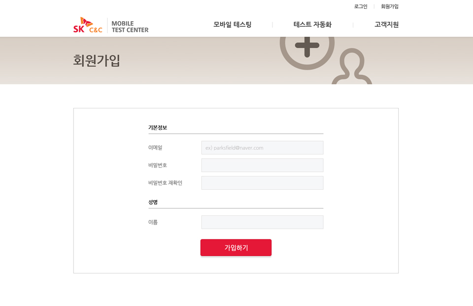

LIVE로 수 많은 스마트폰과 태블릿
디바이스를 통해
Application 품질을 높일 수 있습니다.
Application Test가 쉬워집니다.
서비스 및 응용프로그램을 테스트하는데
소용되는 시간과 비용은 최소화하며,
효율적이고, 신뢰 높은 테스트를
이용하세요
전세계 제조사에서 출시하는 모바일
디바이스 보유
서비스 장애 발생 시 관련 디바이스를 통해 신속한 장애처리 가능
해상도,OS버전 별 테스트 및
지속적으로 출시되는 최신 모바일
디바이스 보유
디바이스 구매비용이 발생하지 않아
비용절감 및 퀄리티 높은 App 런칭 기능
원격 LIVE방식으로 언제 어디서든 실제 단말기에 서비스 및 응용 프로그램 테스트 가능
다른 기종 또는 다른 OS버전을 동시에
테스트가 가능하여 높은 퍼포먼스 발생
화면 터치 단말기 스크롤
Home/Back/Menu 등
하드웨어 컨트롤
화면 크기 조정
가로/세로 모드로 전환
실행 App의 편집창에
Text를 입력합니다.
사용자PC에 저장된
APP을 선택하신
단말기에 설치합니다.
단말기에 화면을
PC에 저장합니다.
Debug로그를 실시간으로 수신합니다.
단말기의 Browser가
입력된 URL로
이동합니다.
단말기 화면을
동영상 파일로 저장합니다.
회원가입하기
SK C&C모바일 테스트 센터를 이용하기 전에 회원 가입을 해주시기 바랍니다. 회원가입을 하시면 등록하신 메일로 인증 URL을 보내드립니다.
SK C&
C 모바일 테스트 센터는 모든 브라우저에서 접근이 가능하며, 테스트 할 앱파일(APK)을 준비해 주십시오

SK C&C 모바일 테스트 센터를 이용할 경우 포인트가 필요합니다.
포인트는 매일 1회 홈페이지 로그인 시
50포인트를 제공합니다.(단, 제공된 포인트는 매일 초기화 됩니다.)
디바이스는 30분 단위로, 이용 시 2포인트가
차감됩니다.
원하는 디바이스를 선택하여 Testing을
할 수 있습니다.
SK C&C 모바일 테스트 센터는 디바이스
사용 시간을 30분 단위로 제공합니다.
SK C&C 모바일 테스트 센터는 사용하기
편리한 UI를 제공합니다.
SK C&C 모바일 테스트 센터는 여러
디바이스를 동시에 사용하여 Testing이 가능합니다.